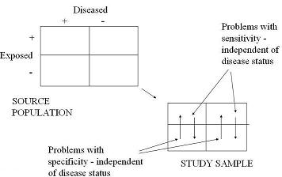
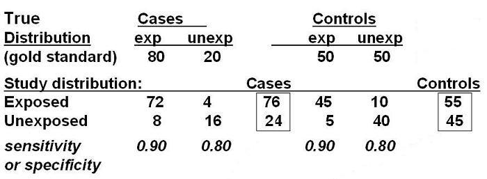
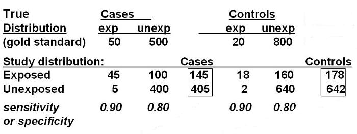

Example of Misclassification Bias
Imperfect Sensitivity and Specificity
Lead Author(s): Jeff Martin, MD
Measurement bias is affected by imperfect sensitivity and specificity of the exposure variable.
Imperfect Sensitivity and Specificity
Isolated problems with sensitivity or specificity are the exception rather than the rule because, in fact, measurements often suffer from both problems with sensitivity and specificity.
- Here we depict both imperfect sensitivity and specificity in the measurement of the exposure.

Distribution of Cases and Controls

At the top you see a 2x2 table of the source population, where the true odds ratio is 4.0.
Sensitivity 90%
What happens when sensitivity of exposure measurement is 90% and specificity is 80%?
Of 80 truly exposed cases, if the sensitivity of the exposure measurement is 90%, then 72 will be classified as exposed and 8 as unexposed.
STUDY DISTRIBUTION: EXPOSED
Specificity 80%
Among the 20 truly unexposed cases, if the specificity is 80% we would see 16 cases classified as unexposed and 4 as exposed.
STUDY DISTRIBUTION: UNEXPOSED
Attenuation of Measure of Association
If you then add these rows up you get a net of 76 exposed cases and 20 unexposed cases.
You can then do the same thing for the controls and ultimately you see what the observed 2x2 table will look like. Now the OR is all the way down to 2.6.
This again illustrates how non-differential misclassification of exposure results in attenuated measures of association. And, it illustrates how seemingly respectable figures for sensitivity and specificity, 90 and 80%, can result in a substantial bias, from an OR of 4 down to 2.6.
What if you had assembled your sample size to have 80% power to detect on effect size of an odds ratio = 4.0? What would the effect of this measurement bias be for your study? Suddenly, your power to detect a statistically significant effect size is much lower.
Uncommon Exposure
In addition to the actual sensitivity and specificity of the exposure measurement,
- it also turns out that the absolute prevalence of the exposure in the source population,
- as best seen in the controls, also makes a big difference in determining the extent of bias.
When the numbers (number exposed and number unexposed) start off more balanced than they are more resilient to changes than they are when they start off imbalanced.
- In the above 2x2 table, we had 50 exposed and 50 unexposed in the control group.
- After we moved the numbers around after accounting for misclassification, we now have 55 and 45.
- The odds have not changed much.
Imbalance in Controls

But you if start off with 20 and 800, as shown above, and then move 158 more persons into the exposed control group to come up with 178 and 642;
- in this case, the odds of exposure in the controls have gone up by over a factor of 10.
In other words, the more imbalance you start with (i.e., from lower prevalence of exposure) the more radically changed is the exposure odds in the controls and hence more radically altered is the odds ratio.